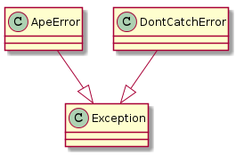
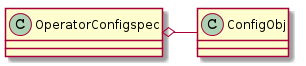
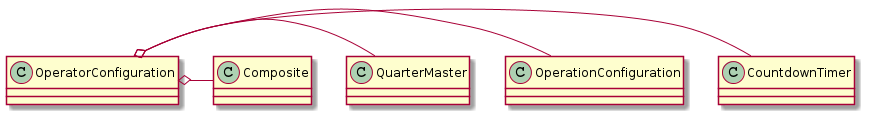
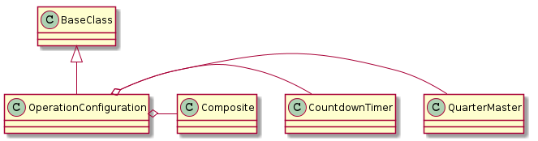
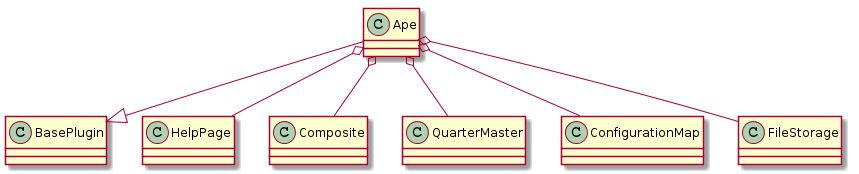

The Ape Plugin¶

This is the plugin that creates the Hortator to run Composites. It will be used when the run subcommand is called by the user.
Introduction¶
Rather than implementing separate classes for the different levels of Composites used in executing the run sub-command of the APE, a single composite is defined which accepts error and message specifications (and composes Components) to define the particular instance of the Composite.

The Hortator, Operator and Operation are instances of the Composite and so aren’t functionally different but they catch different levels of exceptions so that there can be a certain level of self-recovery and error handling. Each execution of the ape will have one Hortator composed of Operators (one Operator per configuration file with an APE section). Each line in the APE will correspond to an Operation composed of Leafs (one Leaf per item on the comma-separated line). Each Leaf is a plugin’s product. Thus when a plugin is created, the product should inherit from the Component class in order to make sure it has the same interface.
The reason for differentiating the three Composites is to allow different levels of error handling. For instance, differentiating Operation vs Operator allows the user to decide on a set of plugins that will be called even if the first set crashes. e.g.:
[APE]
op_1 = WatchRSSI,IperfSession
op_2 = CleanUp
When translated to objects, this configuration would create one Operation composite for each line and both lines would be composed in an Operator (and if there are multiple config-files with [APE] sections, an Operator will be created for each and all Operators will be composed in the Hortator). If one of the Leafs in op_1 (WatchRSSI or IperfSession) crashes in a predictable way (raising an ApeError or the equivalent) then the op_2 Leaf (CleanUp) should still be executed. The reason for only catching ape-defined exceptions is so that if something is really wrong with the code or system and another exception is raised (either a python-built-in exception or from an external third-party package), it will be assumed that the configuration is un-runnable and the Hortator will move on to the next Operator.
The Errors¶

Since the two errors are siblings, catching the ApeError won’t catch the DontCatchError.
Constants¶
These are constants put into classes to make it easier for the tests to find them and to make the configuration-file settings more implicit.
class OperatorConfigurationConstants(object):
"""
constants for the OperatorConfiguration
"""
__slots__ = ()
# sections
settings_section = 'SETTINGS'
operations_section = 'OPERATIONS'
plugins_section = "PLUGINS"
# options
repetitions_option = 'repetitions'
config_glob_option = 'config_glob'
total_time_option = 'total_time'
end_time_option = 'end_time'
subfolder_option = 'subfolder'
modules_option = 'external_modules'
timestamp_option = 'timestamp'
plugin_option = 'plugin'
# defaults
default_repetitions = 1
default_config_glob = None
default_total_time = None
default_end_time = None
default_subfolder = None
default_modules = None
default_timestamp = None
#extra
file_storage_name = 'infrastructure'
OperatorConfigspec¶
The Configuration Specification for the Operator Configuration. It’s used by configobj to validate a configuration, convert strings to types, and set defaults.
config_spec = """
[SETTINGS]
config_glob = string(default=None)
repetitions = integer(default=1)
total_time = relative_time(default=None)
end_time = absolute_time(default=None)
subfolder = string(default=None)
external_modules = string_list(default=None)
timestamp = string(default=None)
[OPERATIONS]
__many__ = force_list
[PLUGINS]
[[__many__]]
plugin = string
"""
It looks like the way configobj works there isn’t a way to force the plugins section with the configspec, it just shows up...

| OperatorConfigspec() | A configuration specification for the OperatorConfiguration |
| OperatorConfigspec.configspec | A configspec that matches the Operator’s Configuration |
| OperatorConfigspec.subconfigspec | |
| OperatorConfigspec.validator | A validator with user-defined classes |
OperatorConfiguration¶
The OperatorConfiguration builds the dependencies for the Operators.
- Responsibility: Build the Operator from the configuration.

| OperatorConfiguration(source) | Extracts arguments for operators from the configuration |
| OperatorConfiguration.configuration | ConfigObj built from source |
| OperatorConfiguration.configspec | OperatorConfigspec |
| OperatorConfiguration.countdown_timer | CountdownTimer built from the configuration for the operator |
| OperatorConfiguration.initialize_file_storage() | This has to be called before the plugins are built so the path will be set |
| OperatorConfiguration.operation_configurations | Generator of Operation Configurations |
| OperatorConfiguration.quartermaster | QuarterMaster built with external_modules |
| OperatorConfiguration.operation_timer | A countdown timer for operations to share (None if end_time not set) |
| OperatorConfiguration.operator | Operator composite built from the configuration |
| OperatorConfiguration.save_configuration(...) | saves the configuration map to disk |
OperationConfiguration¶
A dependency builder for operations.
- Responsibility: builds composite of plugins from PLUGINS section

| OperationConfiguration(plugins_section, ...) | a builder of plugins for operations |
| OperationConfiguration.plugin_sections_names | creates a dict of plugin section-name:plugin-name pairs |
| OperationConfiguration.operation | A composite of plugins |
The Run State Diagram¶
The assumed flow for the run sub-command is something like this:
![digraph run_state_diagram {
rankdir = LR
pa [label="Parse Args"]
bc [label="Build Map"]
bo [label="Build Composites"]
run [label="Run", shape=diamond]
data [label="Data", shape=rect]
start [label="Start", shape=diamond]
configurations [label="Configurations", shape=rect]
start -> pa [label="args"]
pa -> bc [label="name"]
configurations -> bc [label="config"]
bc -> bo [label="map"]
bo -> run [label="Hortator"]
run -> data [label="datum"]
}](../_images/graphviz-d11479647088c6abaf0715805ff23c4a7a2a1752.png)
This means:
- The Parse Args state has been reached before this plugin is created.
- The Build Map uses a ConfigurationMap <configuration-map>
- the Build Composites happens in creating the product
CONFIGURATION = '''[OPERATIONS]
# the option names are just identifiers
# they will be executed in the order given.
# Each plugin has to have a corresponding section below
# e.g. if there is a `Sleep1` plugin listed as a right-hand-side value
# Then there needs to be a [[Sleep1]] section in the [PLUGINS] section
# to configure it
<option_name_1> = <comma-separated-list of plugins>
<option_name_2> = <comma-separated-list of plugins>
...
<option_name_n> = <comma-separated-list of plugins>
#[SETTINGS]
# these are settings for the overall operation
# if you add a configuration-file-glob (config_glob),
# all matching files will be added to the configuration
# (the default is None)
#config_glob = settings*.config
# if you want to repeat the operation defined in this config, give it repetitions
# (default is 1)
# repetitions = 1000000
# If you want to put a time limit after which to quit (this overrides repetitions)
# (default is None)
# total_time = 1 day 3 hours
# if you want to put an end time (this will override repetitions and total time):
# (default is None)
# end_time = November 23, 2013 8:00 am
# if you want to store files in a sub-folder
# (default is None)
# subfolder = <name>
# if one or more plugins is coming from the ape
# tell me which module to import it from
# comma-separated list
# (default is None)
# external_modules = package.module, package2.module2
# if you want to override the file timestamp format
# (default is None)
# timestamp = <strftime-formatted timestamp>
[PLUGINS]
# for each plugin listed in the [OPERATIONS] there has to be a matching
# subsection below this section
# sub-sections are denoted by double-brackets (you can indent them too)
# the actual class name for the plugin is set with the 'plugin' option
# the rest of each plugin sub-section has to be whatever configures the plugin
# [[plugin1]]
# plugin = Sleep
# updates_section = <section_name>
# <sleep configuration>
# [[plugin2]]
# plugin = Iperf
# <Iperf configuration>
'''

Class Diagram¶

The API¶
| Ape([configfiles]) | The default plugin (provides the front-end for the APE) |
| Ape.help([width]) | Prints a help-string for the plugin |
| Ape.product | This is the Hortator Composite product |
| Ape.fetch_config() | Prints example configuration to stdout |
| Ape.arguments | The ArgumentBuilder (used to set up the help-string) |
| Ape.sections | An ordered dictionary for the HelpPage |
Using External Plugins¶
In order to allow the execution of plugins that are not a part of the ape, I am allowing the declaration of modules in the configuration file:
[MODULES]
package.module
Or something similar. The ape will search modules named in the MODULES section for children of the ape.plugins.base_plugin.BasePlugin class and load and call them if found. The idea is that rather than having to mix up the ape and other packages, a sandbox package can be setup with plugins that act as the interface between the ape and the other package(s).
Using the FakePlugin created for the Exploring External Imports section, the config file for the ape could look something like this:
[APE]
operation_1 = FakePlugin
[MODULES]
fakepackage.fakeplugin
[FakePlugin]
plugin = FakePlugin
option = value
The FakePlugin returns a DummyClass as its product so the FAKEPLUGIN section doesn’t really do anything.
Note
In order to allow more than one instance of a plugin to be created, the plugin=<plugin class name> line was added. Each section that configures a plugin needs it. The header for the section is arbitrary but must match the value defined in the APE section.
If we wanted to configure a second FakePlugin, for instance, we could do something like this:
[APE]
operation_1 = apple, banana
[MODULES]
fakepackage.fakeplugin
[apple]
plugin = FakePlugin
option = value
[banana]
plugin = FakePlugin
options = other_value
This is the intended way for it to work, anyway. If the plugin wasn’t built to use the section_header attribute when retrieving section information it won’t work.